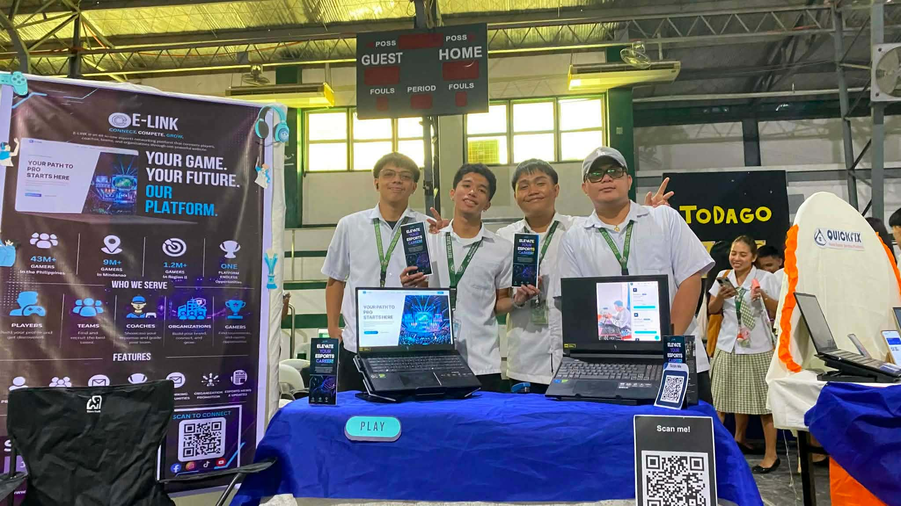

E-Link – Web Development Project
Esports Networking Platform
Demonstrates skills in web design and development, focusing on creating a user-friendly, responsive, and visually appealing platform. Through this project, I strengthened my understanding of front-end development, user experience, and problem-solving in a real-world competitive context.